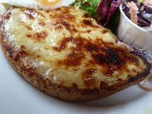

Welsh Rarebit Recipe

Ingredients
- Cheddar
- Milk
- Beer
- Flour
- Mustard
- Garlic
- Ham
- Bread
- Apple
- Lemon juice
Method
- Make a roux with 50g butter & 50g flour
- Add 150ml milk and 150ml beer
- Stir until thick
- Add crushed garlic and mustard
- Add 250g grated cheddar and cook until a thick even consistency
- Spoon a small amount the cheese mixture onto slices of a toasted bread
- Use the mixture to stick a slice of ham to the bread
- Top with more of the cheese mixture
- Grill until golden brown
- Serve with apple sliced into matchsticks with lemon juice